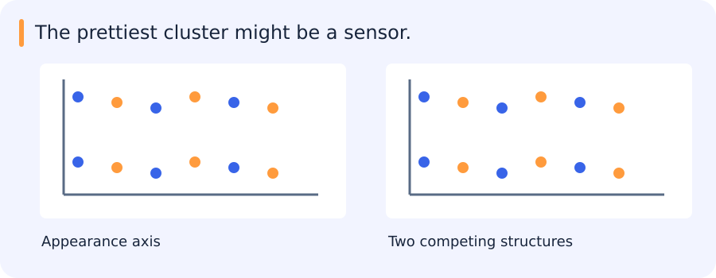

Two clusters, two possible explanations
An embedding plot separates a dataset into two attractive islands. Looking at the images reveals that one island is bright and the other dark; both contain cars and trucks. The grouping is real, but it may not reflect the distinction we wanted.

Unsupervised methods organize the representation and relationships we give them. PCA favours high-variance directions, while clustering and nonlinear visualizations impose other criteria. Colouring the same plot by class, sensor and collection time can reveal which structure each method has captured.
That makes representation, scaling and distance part of the explanation, rather than details to choose after seeing the plot.
Jump to a concept
Structure depends on representation
Unsupervised methods optimize a structure criterion without direct class supervision. A cluster is not automatically a semantic category. Feature scaling, distance, density and acquisition artifacts all change the discovered structure. Inspect examples and stability before assigning meaning. Keep data used for exploratory visualization distinct from a claim of predictive performance.
Principal component analysis
Center a training feature matrix, then compute its singular value decomposition. Principal directions are orthogonal directions of maximal variance; projecting onto the leading directions minimizes squared reconstruction error among linear projections of the same rank. Explained variance describes representation variance, not class information. A low-variance direction can be essential to classification and a high-variance direction can be illumination or sensor identity.
Standardization changes the optimization from raw units to scaled units. Whitening additionally rescales principal coordinates and can amplify low-variance noise. Select dimensionality with a stated objective and evaluate downstream consequences. Fit the mean, scaling and PCA only on the training portion of a predictive pipeline. A reconstruction check and a plot of variance versus dimension reveal different aspects of the approximation.
K-means and hierarchical clustering
K-means alternates assignment to the nearest center and center updates to cluster means, reducing within-cluster squared Euclidean distance. Initialization and K matter; multiple restarts help with local solutions. It prefers compact roughly isotropic groups and requires a convention for empty clusters. A small objective does not establish that the clusters match useful classes.
Agglomerative hierarchical clustering repeatedly merges groups using a linkage criterion. Single linkage can chain through bridges; complete linkage prefers compact groups; average linkage averages cross-group distances. A dendrogram shows a hierarchy, but cutting it at one distance is a modeling decision. Computational and memory costs can grow quadratically, so a demonstration on a small sample may not scale to millions of proposals.
Density and graph methods
DBSCAN joins density-connected neighborhoods, with epsilon setting a spatial scale and minimum samples defining density. It can find irregular shapes and mark noise without choosing a cluster count, but one global scale struggles with strongly varying densities and high-dimensional distances. Spectral clustering builds an affinity graph, forms a graph Laplacian, embeds vertices using selected eigenvectors and clusters the embedding. Graph connectivity, affinity bandwidth and normalization can dominate the result. A disconnected graph may encode the answer before any later clustering step.
Mixtures and expectation maximization
A Gaussian mixture models p(x) = sum_k pi_k N(x|mu_k,Sigma_k), where nonnegative mixture weights sum to one. Components give soft membership rather than mandatory hard cluster labels. EM alternates an E-step computing responsibilities proportional to pi_k times each component likelihood, and an M-step updating weights, means and covariances with those responsibilities.
In a basic full-covariance update, each mean is a responsibility-weighted average and each covariance averages centered outer products. Under regular conditions, exact EM steps do not decrease training likelihood, but may converge to a local solution. An unconstrained component can collapse onto a data point with near-singular covariance; regularize covariance, constrain the family or monitor degeneracy. Component labels can permute without changing the distribution, so compare distributions or aligned components rather than raw numeric IDs. K-means and GMM assignments reflect different noise/shape assumptions.
Nonlinear visualization
t-SNE emphasizes local neighbor relationships by matching probability distributions in high and low dimensions. Perplexity, learning rate, initialization and sample density affect its map. Visual cluster area is not population size or original variance, and distances between separated groups are not a calibrated semantic distance. Repeat with several settings before interpreting an apparent island.
UMAP constructs a weighted neighborhood graph and optimizes a low-dimensional representation. Neighbor count and minimum distance change the local/global appearance. It can provide useful projections and transformations, but a clean picture remains a model output. Validate meaningful neighborhood structure in the original representation and with actual examples. Do not use a visually separated t-SNE figure as evidence that a classifier will generalize to new sensors.
Outliers and practical interpretation
An anomaly is unusual relative to a reference distribution, not necessarily an error or threat. Density models, one-class methods and reconstruction residuals reveal different notions of unusualness. A new legitimate sensor can look anomalous while an adversarially plausible failure appears normal. In the proposal-retrieval workflow, show nearest examples for each discovered group, audit noise points and record the sampling design. Ask your agent for a plausible alternative explanation for each cluster, then test it on metadata and held-out inputs.
Original source references and provenance
Original teaching text covering the cited topics, not a verbatim mirror. These references are provenance; no external reading is required to use this chapter.
- http://cs229.stanford.edu/notes/cs229-notes7a.pdf
- http://cs229.stanford.edu/notes2019fall/cs229-notes10.pdf
- http://www.ai.mit.edu/courses/6.867-f04/lectures/lecture-13.pdf
- http://www.ai.mit.edu/courses/6.867-f04/lectures/lecture-14.pdf
- http://www.ai.mit.edu/courses/6.867-f04/lectures/lecture-16.pdf
- https://distill.pub/2016/misread-tsne/
- https://github.com/rasbt/stat479-machine-learning-fs19/blob/master/14_feat-extract/14_feat-extract__slides.pdf
- https://medium.com/data-science/a-guide-to-clustering-algorithms-e28af85da0b7
- https://muttinenisairohith.medium.com/regression-classification-and-clustering-understanding-core-machine-learning-concepts-8a546bfc1a96
- https://pair-code.github.io/understanding-umap/
- https://towardsdatascience.com/dbscan-clustering-explained-97556a2ad556
- https://towardsdatascience.com/expectation-maximization-for-gmms-explained-5636161577ca
- https://towardsdatascience.com/k-means-clustering-explained-4528df86a120
- https://towardsdatascience.com/t-sne-clearly-explained-d84c537f53a
- https://towardsdatascience.com/the-5-clustering-algorithms-data-scientists-need-to-know-a36d136ef68
- https://www.geeksforgeeks.org/machine-learning/gaussian-mixture-model/
- https://www.geeksforgeeks.org/machine-learning/ml-expectation-maximization-algorithm/
- https://www.kaggle.com/code/vipulgandhi/spectral-clustering-detailed-explanation